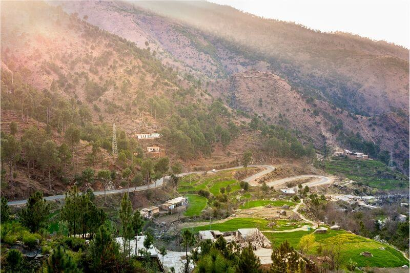

Tourist Spot
There are glacier fields in Gilgit which provide opportunities for winter sports. There are so many beautiful lakes in the midst of high mountains. These famous lakes are the “Saiful Mulk” in Kaghan valley and the “Sat Para” and ” Kachura” lakes in Skardu. Tourism helps us to earn valuable foreign exchange.
Some most beautiful places in Pakistan
1. SWAT VALLEY
Though it has had a rough past, the present and future of Swat Valley are shining very bright. This stunning valley in the Khyber Pakhtunkhwa province of Pakistan is something straight out of a fairy tale. Think bright green fields and forests, picturesque villages, and rivers boasting shades of blue so clear and bright you wouldn’t have thought them real! The true beauty of Swat can be found around the town of Kalam, which serves as a base to the explore the beauty of the valley. Here are 3 places you can’t miss in Swat Valley:
2. HUNZA VALLEY

If you live in Pakistan – or have read anything about the country – it’s almost certain you’ve come across the name Hunza. Don’t let the word ‘valley’ confuse you, though – Hunza is actually a massive district made up of numerous valleys and villages. One part of the ancient Silk Road, here are some of the most beautiful sights in Hunza:
3.YARKHUN VALLEY

Though it’s relatively unheard of and forgotten compared to Pakistan’s most famous tourist spots, I think Yarkhun Valley was the most beautiful place I visited in the country. Located in the Upper Chitral district of Khyber Pakhtunkhwa, Yarkhun dazzles with its mountain ranges and untouched villages. Reaching the valley, which stretches for many kilometres past the administrative town of Mastuj, requires a bit of effort if you don’t have your own vehicle. If you do have one though, the ride isn’t too bad – just prepare for mostly dirt roads! The side valley of Gazin is most definitely worth a detour if you make it all the way to Yarkhun. Here, you can see the mountains of the Thoi Pass, a high-altitude pass that connects Upper Chitral with Yasin Valley in Gilgit Baltistan.